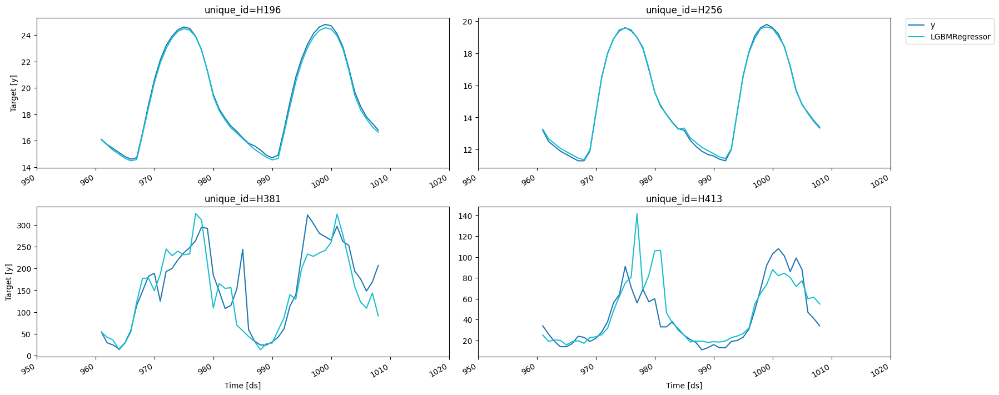
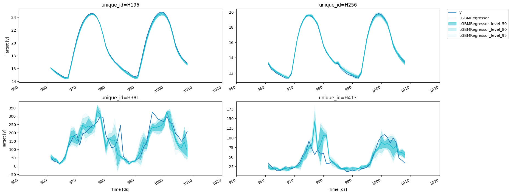
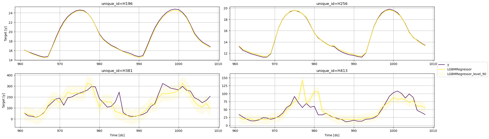
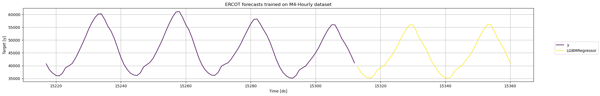
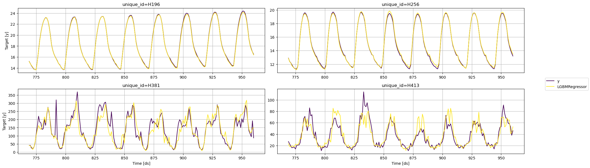
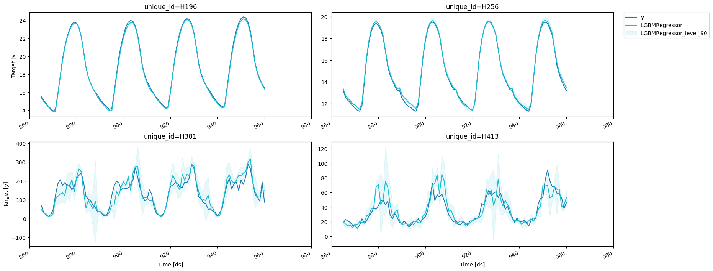

import random
import lightgbm as lgb
import matplotlib.pyplot as plt
import numpy as np
import xgboost as xgb
from datasetsforecast.m4 import M4, M4Info
from sklearn.linear_model import LinearRegression
from utilsforecast.plotting import plot_series
from window_ops.ewm import ewm_mean
from window_ops.expanding import expanding_mean
from window_ops.rolling import rolling_mean
from mlforecast.lgb_cv import LightGBMCV
from mlforecast.target_transforms import Differences, LocalStandardScaler
from mlforecast.utils import generate_daily_seriesMLForecast
Full pipeline encapsulation
Data
This shows an example with just 4 series of the M4 dataset. If you want to run it yourself on all of them, you can refer to this notebook.
group = 'Hourly'
await M4.async_download('data', group=group)
df, *_ = M4.load(directory='data', group=group)
df['ds'] = df['ds'].astype('int')
ids = df['unique_id'].unique()
random.seed(0)
sample_ids = random.choices(ids, k=4)
sample_df = df[df['unique_id'].isin(sample_ids)]
sample_df| unique_id | ds | y | |
|---|---|---|---|
| 86796 | H196 | 1 | 11.8 |
| 86797 | H196 | 2 | 11.4 |
| 86798 | H196 | 3 | 11.1 |
| 86799 | H196 | 4 | 10.8 |
| 86800 | H196 | 5 | 10.6 |
| ... | ... | ... | ... |
| 325235 | H413 | 1004 | 99.0 |
| 325236 | H413 | 1005 | 88.0 |
| 325237 | H413 | 1006 | 47.0 |
| 325238 | H413 | 1007 | 41.0 |
| 325239 | H413 | 1008 | 34.0 |
4032 rows × 3 columns
We now split this data into train and validation.
info = M4Info[group]
horizon = info.horizon
valid = sample_df.groupby('unique_id').tail(horizon)
train = sample_df.drop(valid.index)
train.shape, valid.shape((3840, 3), (192, 3))MLForecast
MLForecast (models:Union[sklearn.base.BaseEstimator,List[sklearn.base.Bas eEstimator],Dict[str,sklearn.base.BaseEstimator]], freq:Union[int,str,pandas._libs.tslibs.offsets.BaseOffset], lags:Optional[Iterable[int]]=None, lag_transforms:Optional[Di ct[int,List[Union[Callable,Tuple[Callable,Any]]]]]=None, date_features:Optional[Iterable[Union[str,Callable]]]=None, num_threads:int=1, target_transforms:Optional[List[Union[mlfo recast.target_transforms.BaseTargetTransform,mlforecast.targe t_transforms.BaseGroupedArrayTargetTransform]]]=None)
Forecasting pipeline
| Type | Default | Details | |
|---|---|---|---|
| models | typing.Union[sklearn.base.BaseEstimator, typing.List[sklearn.base.BaseEstimator], typing.Dict[str, sklearn.base.BaseEstimator]] | Models that will be trained and used to compute the forecasts. | |
| freq | typing.Union[int, str, pandas._libs.tslibs.offsets.BaseOffset] | Pandas offset, pandas offset alias, e.g. ‘D’, ‘W-THU’ or integer denoting the frequency of the series. | |
| lags | typing.Optional[typing.Iterable[int]] | None | Lags of the target to use as features. |
| lag_transforms | typing.Optional[typing.Dict[int, typing.List[typing.Union[typing.Callable, typing.Tuple[typing.Callable, typing.Any]]]]] | None | Mapping of target lags to their transformations. |
| date_features | typing.Optional[typing.Iterable[typing.Union[str, typing.Callable]]] | None | Features computed from the dates. Can be pandas date attributes or functions that will take the dates as input. |
| num_threads | int | 1 | Number of threads to use when computing the features. |
| target_transforms | typing.Optional[typing.List[typing.Union[mlforecast.target_transforms.BaseTargetTransform, mlforecast.target_transforms.BaseGroupedArrayTargetTransform]]] | None | Transformations that will be applied to the target before computing the features and restored after the forecasting step. |
The MLForecast object encapsulates the feature engineering + training the models + forecasting
fcst = MLForecast(
models=lgb.LGBMRegressor(random_state=0, verbosity=-1),
freq=1,
lags=[24 * (i+1) for i in range(7)],
lag_transforms={
48: [(ewm_mean, 0.3)],
},
num_threads=1,
target_transforms=[Differences([24])],
)
fcstMLForecast(models=[LGBMRegressor], freq=1, lag_features=['lag24', 'lag48', 'lag72', 'lag96', 'lag120', 'lag144', 'lag168', 'ewm_mean_lag48_alpha0.3'], date_features=[], num_threads=1)Once we have this setup we can compute the features and fit the model.
MLForecast.fit
MLForecast.fit (df:Union[pandas.core.frame.DataFrame,polars.dataframe.fr ame.DataFrame], id_col:str='unique_id', time_col:str='ds', target_col:str='y', static_features:Optional[List[str]]=None, dropna:bool=True, keep_last_n:Optional[int]=None, max_horizon:Optional[int]=None, prediction_intervals:Opti onal[mlforecast.utils.PredictionIntervals]=None, fitted:bool=False, as_numpy:bool=False)
Apply the feature engineering and train the models.
| Type | Default | Details | |
|---|---|---|---|
| df | typing.Union[pandas.core.frame.DataFrame, polars.dataframe.frame.DataFrame] | Series data in long format. | |
| id_col | str | unique_id | Column that identifies each serie. |
| time_col | str | ds | Column that identifies each timestep, its values can be timestamps or integers. |
| target_col | str | y | Column that contains the target. |
| static_features | typing.Optional[typing.List[str]] | None | Names of the features that are static and will be repeated when forecasting. If None, will consider all columns (except id_col and time_col) as static. |
| dropna | bool | True | Drop rows with missing values produced by the transformations. |
| keep_last_n | typing.Optional[int] | None | Keep only these many records from each serie for the forecasting step. Can save time and memory if your features allow it. |
| max_horizon | typing.Optional[int] | None | Train this many models, where each model will predict a specific horizon. |
| prediction_intervals | typing.Optional[mlforecast.utils.PredictionIntervals] | None | Configuration to calibrate prediction intervals (Conformal Prediction). |
| fitted | bool | False | Save in-sample predictions. |
| as_numpy | bool | False | Cast features to numpy array. |
| Returns | MLForecast | Forecast object with series values and trained models. |
fcst = MLForecast(
models=lgb.LGBMRegressor(random_state=0, verbosity=-1),
freq=1,
lags=[24 * (i+1) for i in range(7)],
lag_transforms={
48: [(ewm_mean, 0.3)],
},
num_threads=1,
target_transforms=[Differences([24])],
)fcst.fit(train, fitted=True);MLForecast.forecast_fitted_values
MLForecast.forecast_fitted_values ()
Access in-sample predictions.
fcst.forecast_fitted_values()| unique_id | ds | y | LGBMRegressor | |
|---|---|---|---|---|
| 0 | H196 | 193 | 12.7 | 12.671271 |
| 1 | H196 | 194 | 12.3 | 12.271271 |
| 2 | H196 | 195 | 11.9 | 11.871271 |
| 3 | H196 | 196 | 11.7 | 11.671271 |
| 4 | H196 | 197 | 11.4 | 11.471271 |
| ... | ... | ... | ... | ... |
| 3067 | H413 | 956 | 59.0 | 68.280574 |
| 3068 | H413 | 957 | 58.0 | 70.427570 |
| 3069 | H413 | 958 | 53.0 | 44.767965 |
| 3070 | H413 | 959 | 38.0 | 48.691257 |
| 3071 | H413 | 960 | 46.0 | 46.652238 |
3072 rows × 4 columns
Once we’ve run this we’re ready to compute our predictions.
MLForecast.predict
MLForecast.predict (h:int, before_predict_callback:Optional[Callable]=None, after_predict_callback:Optional[Callable]=None, new_d f:Union[pandas.core.frame.DataFrame,polars.dataframe. frame.DataFrame,NoneType]=None, level:Optional[List[Union[int,float]]]=None, X_df:Uni on[pandas.core.frame.DataFrame,polars.dataframe.frame .DataFrame,NoneType]=None, ids:Optional[List[str]]=None)
Compute the predictions for the next h steps.
| Type | Default | Details | |
|---|---|---|---|
| h | int | Number of periods to predict. | |
| before_predict_callback | typing.Optional[typing.Callable] | None | Function to call on the features before computing the predictions. This function will take the input dataframe that will be passed to the model for predicting and should return a dataframe with the same structure. The series identifier is on the index. |
| after_predict_callback | typing.Optional[typing.Callable] | None | Function to call on the predictions before updating the targets. This function will take a pandas Series with the predictions and should return another one with the same structure. The series identifier is on the index. |
| new_df | typing.Union[pandas.core.frame.DataFrame, polars.dataframe.frame.DataFrame, NoneType] | None | Series data of new observations for which forecasts are to be generated. This dataframe should have the same structure as the one used to fit the model, including any features and time series data. If new_df is not None, the method will generate forecasts for the new observations. |
| level | typing.Optional[typing.List[typing.Union[int, float]]] | None | Confidence levels between 0 and 100 for prediction intervals. |
| X_df | typing.Union[pandas.core.frame.DataFrame, polars.dataframe.frame.DataFrame, NoneType] | None | Dataframe with the future exogenous features. Should have the id column and the time column. |
| ids | typing.Optional[typing.List[str]] | None | List with subset of ids seen during training for which the forecasts should be computed. |
| Returns | typing.Union[pandas.core.frame.DataFrame, polars.dataframe.frame.DataFrame] | Predictions for each serie and timestep, with one column per model. |
predictions = fcst.predict(horizon)We can see at a couple of results.
results = valid.merge(predictions, on=['unique_id', 'ds'])
fig = plot_series(train, results, max_insample_length=0)
fig.savefig('figs/forecast__predict.png', bbox_inches='tight')
Prediction intervals
With MLForecast, you can generate prediction intervals using Conformal Prediction. To configure Conformal Prediction, you need to pass an instance of the PredictionIntervals class to the prediction_intervals argument of the fit method. The class takes three parameters: n_windows, h and method.
n_windowsrepresents the number of cross-validation windows used to calibrate the intervalshis the forecast horizonmethodcan beconformal_distributionorconformal_error;conformal_distribution(default) creates forecasts paths based on the cross-validation errors and calculate quantiles using those paths, on the other handconformal_errorcalculates the error quantiles to produce prediction intervals. The strategy will adjust the intervals for each horizon step, resulting in different widths for each step. Please note that a minimum of 2 cross-validation windows must be used.
fcst.fit(
train,
prediction_intervals=PredictionIntervals(n_windows=3, h=48)
);After that, you just have to include your desired confidence levels to the predict method using the level argument. Levels must lie between 0 and 100.
predictions_w_intervals = fcst.predict(48, level=[50, 80, 95])predictions_w_intervals.head()| unique_id | ds | LGBMRegressor | LGBMRegressor-lo-95 | LGBMRegressor-lo-80 | LGBMRegressor-lo-50 | LGBMRegressor-hi-50 | LGBMRegressor-hi-80 | LGBMRegressor-hi-95 | |
|---|---|---|---|---|---|---|---|---|---|
| 0 | H196 | 961 | 16.071271 | 15.958042 | 15.971271 | 16.005091 | 16.137452 | 16.171271 | 16.184501 |
| 1 | H196 | 962 | 15.671271 | 15.553632 | 15.553632 | 15.578632 | 15.763911 | 15.788911 | 15.788911 |
| 2 | H196 | 963 | 15.271271 | 15.153632 | 15.153632 | 15.162452 | 15.380091 | 15.388911 | 15.388911 |
| 3 | H196 | 964 | 14.971271 | 14.858042 | 14.871271 | 14.905091 | 15.037452 | 15.071271 | 15.084501 |
| 4 | H196 | 965 | 14.671271 | 14.553632 | 14.553632 | 14.562452 | 14.780091 | 14.788911 | 14.788911 |
# test we can forecast horizon lower than h
# with prediction intervals
for method in ['conformal_distribution', 'conformal_errors']:
fcst.fit(
train,
prediction_intervals=PredictionIntervals(n_windows=3, h=48)
)
preds_h_lower_h = fcst.predict(1, level=[50, 80, 95])
preds_h_lower_h = fcst.predict(30, level=[50, 80, 95])
# test monotonicity of intervals
test_eq(
preds_h_lower_h.filter(regex='lo|hi').apply(
lambda x: x.is_monotonic_increasing,
axis=1
).sum(),
len(preds_h_lower_h)
)Let’s explore the generated intervals.
results = valid.merge(predictions_w_intervals, on=['unique_id', 'ds'])
fig = plot_series(train, results, max_insample_length=0, level=[50, 80, 95])
fig.savefig('figs/forecast__predict_intervals.png', bbox_inches='tight')
If you want to reduce the computational time and produce intervals with the same width for the whole forecast horizon, simple pass h=1 to the PredictionIntervals class. The caveat of this strategy is that in some cases, variance of the absolute residuals maybe be small (even zero), so the intervals may be too narrow.
fcst.fit(
train,
prediction_intervals=PredictionIntervals(n_windows=3, h=1)
);predictions_w_intervals_ws_1 = fcst.predict(48, level=[80, 90, 95])Let’s explore the generated intervals.
results = valid.merge(predictions_w_intervals_ws_1, on=['unique_id', 'ds'])
fig = plot_series(train, results, max_insample_length=0, level=[90])
fig.savefig('figs/forecast__predict_intervals_window_size_1.png', bbox_inches='tight')
Forecast using a pretrained model
MLForecast allows you to use a pretrained model to generate forecasts for a new dataset. Simply provide a pandas dataframe containing the new observations as the value for the new_df argument when calling the predict method. The dataframe should have the same structure as the one used to fit the model, including any features and time series data. The function will then use the pretrained model to generate forecasts for the new observations. This allows you to easily apply a pretrained model to a new dataset and generate forecasts without the need to retrain the model.
ercot_df = pd.read_csv('https://datasets-nixtla.s3.amazonaws.com/ERCOT-clean.csv')
# we have to convert the ds column to integers
# since MLForecast was trained with that structure
ercot_df['ds'] = np.arange(1, len(ercot_df) + 1)
# use the `new_df` argument to pass the ercot dataset
ercot_fcsts = fcst.predict(horizon, new_df=ercot_df)
fig = plot_series(ercot_df, ercot_fcsts, max_insample_length=48 * 2)
If you want to take a look at the data that will be used to train the models you can call Forecast.preprocess.
MLForecast.preprocess
MLForecast.preprocess (df:Union[pandas.core.frame.DataFrame,polars.dataf rame.frame.DataFrame], id_col:str='unique_id', time_col:str='ds', target_col:str='y', static_features:Optional[List[str]]=None, dropna:bool=True, keep_last_n:Optional[int]=None, max_horizon:Optional[int]=None, return_X_y:bool=False, as_numpy:bool=False)
Add the features to data.
| Type | Default | Details | |
|---|---|---|---|
| df | typing.Union[pandas.core.frame.DataFrame, polars.dataframe.frame.DataFrame] | Series data in long format. | |
| id_col | str | unique_id | Column that identifies each serie. |
| time_col | str | ds | Column that identifies each timestep, its values can be timestamps or integers. |
| target_col | str | y | Column that contains the target. |
| static_features | typing.Optional[typing.List[str]] | None | Names of the features that are static and will be repeated when forecasting. |
| dropna | bool | True | Drop rows with missing values produced by the transformations. |
| keep_last_n | typing.Optional[int] | None | Keep only these many records from each serie for the forecasting step. Can save time and memory if your features allow it. |
| max_horizon | typing.Optional[int] | None | Train this many models, where each model will predict a specific horizon. |
| return_X_y | bool | False | Return a tuple with the features and the target. If False will return a single dataframe. |
| as_numpy | bool | False | Cast features to numpy array. Only works for return_X_y=True. |
| Returns | typing.Union[pandas.core.frame.DataFrame, polars.dataframe.frame.DataFrame, typing.Tuple[typing.Union[pandas.core.frame.DataFrame, polars.dataframe.frame.DataFrame], numpy.ndarray]] | df plus added features and target(s). |
prep_df = fcst.preprocess(train)
prep_df| unique_id | ds | y | lag24 | lag48 | lag72 | lag96 | lag120 | lag144 | lag168 | ewm_mean_lag48_alpha0.3 | |
|---|---|---|---|---|---|---|---|---|---|---|---|
| 86988 | H196 | 193 | 0.1 | 0.0 | 0.0 | 0.0 | 0.3 | 0.1 | 0.1 | 0.3 | 0.002810 |
| 86989 | H196 | 194 | 0.1 | -0.1 | 0.1 | 0.0 | 0.3 | 0.1 | 0.1 | 0.3 | 0.031967 |
| 86990 | H196 | 195 | 0.1 | -0.1 | 0.1 | 0.0 | 0.3 | 0.1 | 0.2 | 0.1 | 0.052377 |
| 86991 | H196 | 196 | 0.1 | 0.0 | 0.0 | 0.0 | 0.3 | 0.2 | 0.1 | 0.2 | 0.036664 |
| 86992 | H196 | 197 | 0.0 | 0.0 | 0.0 | 0.1 | 0.2 | 0.2 | 0.1 | 0.2 | 0.025665 |
| ... | ... | ... | ... | ... | ... | ... | ... | ... | ... | ... | ... |
| 325187 | H413 | 956 | 0.0 | 10.0 | 1.0 | 6.0 | -53.0 | 44.0 | -21.0 | 21.0 | 7.963225 |
| 325188 | H413 | 957 | 9.0 | 10.0 | 10.0 | -7.0 | -46.0 | 27.0 | -19.0 | 24.0 | 8.574257 |
| 325189 | H413 | 958 | 16.0 | 8.0 | 5.0 | -9.0 | -36.0 | 32.0 | -13.0 | 8.0 | 7.501980 |
| 325190 | H413 | 959 | -3.0 | 17.0 | -7.0 | 2.0 | -31.0 | 22.0 | 5.0 | -2.0 | 3.151386 |
| 325191 | H413 | 960 | 15.0 | 11.0 | -6.0 | -5.0 | -17.0 | 22.0 | -18.0 | 10.0 | 0.405970 |
3072 rows × 11 columns
If we do this we then have to call Forecast.fit_models, since this only stores the series information.
MLForecast.fit_models
MLForecast.fit_models (X:Union[pandas.core.frame.DataFrame,polars.datafra me.frame.DataFrame,numpy.ndarray], y:numpy.ndarray)
Manually train models. Use this if you called MLForecast.preprocess beforehand.
| Type | Details | |
|---|---|---|
| X | typing.Union[pandas.core.frame.DataFrame, polars.dataframe.frame.DataFrame, numpy.ndarray] | Features. |
| y | ndarray | Target. |
| Returns | MLForecast | Forecast object with trained models. |
X, y = prep_df.drop(columns=['unique_id', 'ds', 'y']), prep_df['y']
fcst.fit_models(X, y)MLForecast(models=[LGBMRegressor], freq=1, lag_features=['lag24', 'lag48', 'lag72', 'lag96', 'lag120', 'lag144', 'lag168', 'ewm_mean_lag48_alpha0.3'], date_features=[], num_threads=1)predictions2 = fcst.predict(horizon)
pd.testing.assert_frame_equal(predictions, predictions2)MLForecast.cross_validation
MLForecast.cross_validation (df:Union[pandas.core.frame.DataFrame,polars .dataframe.frame.DataFrame], n_windows:int, h:int, id_col:str='unique_id', time_col:str='ds', target_col:str='y', step_size:Optional[int]=None, static_features:Optional[List[str]]=None, dropna:bool=True, keep_last_n:Optional[int]=None, refit:Union[bool,int]=True, max_horizon:Optional[int]=None, before_predi ct_callback:Optional[Callable]=None, after_p redict_callback:Optional[Callable]=None, pre diction_intervals:Optional[mlforecast.utils. PredictionIntervals]=None, level:Optional[List[Union[int,float]]]=None, input_size:Optional[int]=None, fitted:bool=False, as_numpy:bool=False)
Perform time series cross validation. Creates n_windows splits where each window has h test periods, trains the models, computes the predictions and merges the actuals.
| Type | Default | Details | |
|---|---|---|---|
| df | typing.Union[pandas.core.frame.DataFrame, polars.dataframe.frame.DataFrame] | Series data in long format. | |
| n_windows | int | Number of windows to evaluate. | |
| h | int | Forecast horizon. | |
| id_col | str | unique_id | Column that identifies each serie. |
| time_col | str | ds | Column that identifies each timestep, its values can be timestamps or integers. |
| target_col | str | y | Column that contains the target. |
| step_size | typing.Optional[int] | None | Step size between each cross validation window. If None it will be equal to h. |
| static_features | typing.Optional[typing.List[str]] | None | Names of the features that are static and will be repeated when forecasting. |
| dropna | bool | True | Drop rows with missing values produced by the transformations. |
| keep_last_n | typing.Optional[int] | None | Keep only these many records from each serie for the forecasting step. Can save time and memory if your features allow it. |
| refit | typing.Union[bool, int] | True | Retrain model for each cross validation window. If False, the models are trained at the beginning and then used to predict each window. If positive int, the models are retrained every refit windows. |
| max_horizon | typing.Optional[int] | None | |
| before_predict_callback | typing.Optional[typing.Callable] | None | Function to call on the features before computing the predictions. This function will take the input dataframe that will be passed to the model for predicting and should return a dataframe with the same structure. The series identifier is on the index. |
| after_predict_callback | typing.Optional[typing.Callable] | None | Function to call on the predictions before updating the targets. This function will take a pandas Series with the predictions and should return another one with the same structure. The series identifier is on the index. |
| prediction_intervals | typing.Optional[mlforecast.utils.PredictionIntervals] | None | Configuration to calibrate prediction intervals (Conformal Prediction). |
| level | typing.Optional[typing.List[typing.Union[int, float]]] | None | Confidence levels between 0 and 100 for prediction intervals. |
| input_size | typing.Optional[int] | None | Maximum training samples per serie in each window. If None, will use an expanding window. |
| fitted | bool | False | Store the in-sample predictions. |
| as_numpy | bool | False | Cast features to numpy array. |
| Returns | typing.Union[pandas.core.frame.DataFrame, polars.dataframe.frame.DataFrame] | Predictions for each window with the series id, timestamp, last train date, target value and predictions from each model. |
If we would like to know how good our forecast will be for a specific model and set of features then we can perform cross validation. What cross validation does is take our data and split it in two parts, where the first part is used for training and the second one for validation. Since the data is time dependant we usually take the last x observations from our data as the validation set.
This process is implemented in MLForecast.cross_validation, which takes our data and performs the process described above for n_windows times where each window has h validation samples in it. For example, if we have 100 samples and we want to perform 2 backtests each of size 14, the splits will be as follows:
- Train: 1 to 72. Validation: 73 to 86.
- Train: 1 to 86. Validation: 87 to 100.
You can control the size between each cross validation window using the step_size argument. For example, if we have 100 samples and we want to perform 2 backtests each of size 14 and move one step ahead in each fold (step_size=1), the splits will be as follows:
- Train: 1 to 85. Validation: 86 to 99.
- Train: 1 to 86. Validation: 87 to 100.
You can also perform cross validation without refitting your models for each window by setting refit=False. This allows you to evaluate the performance of your models using multiple window sizes without having to retrain them each time.
fcst = MLForecast(
models=lgb.LGBMRegressor(random_state=0, verbosity=-1),
freq=1,
lags=[24 * (i+1) for i in range(7)],
lag_transforms={
1: [(rolling_mean, 24)],
24: [(rolling_mean, 24)],
48: [(ewm_mean, 0.3)],
},
num_threads=1,
target_transforms=[Differences([24])],
)
cv_results = fcst.cross_validation(
train,
n_windows=2,
h=horizon,
step_size=horizon,
fitted=True,
)
cv_results| unique_id | ds | cutoff | y | LGBMRegressor | |
|---|---|---|---|---|---|
| 0 | H196 | 865 | 864 | 15.5 | 15.373393 |
| 1 | H196 | 866 | 864 | 15.1 | 14.973393 |
| 2 | H196 | 867 | 864 | 14.8 | 14.673393 |
| 3 | H196 | 868 | 864 | 14.4 | 14.373393 |
| 4 | H196 | 869 | 864 | 14.2 | 14.073393 |
| ... | ... | ... | ... | ... | ... |
| 379 | H413 | 956 | 912 | 59.0 | 64.284167 |
| 380 | H413 | 957 | 912 | 58.0 | 64.830429 |
| 381 | H413 | 958 | 912 | 53.0 | 40.726851 |
| 382 | H413 | 959 | 912 | 38.0 | 42.739657 |
| 383 | H413 | 960 | 912 | 46.0 | 52.802769 |
384 rows × 5 columns
Since we set fitted=True we can access the predictions for the training sets as well with the cross_validation_fitted_values method.
fcst.cross_validation_fitted_values()| unique_id | ds | fold | y | LGBMRegressor | |
|---|---|---|---|---|---|
| 0 | H196 | 193 | 0 | 12.7 | 12.673393 |
| 1 | H196 | 194 | 0 | 12.3 | 12.273393 |
| 2 | H196 | 195 | 0 | 11.9 | 11.873393 |
| 3 | H196 | 196 | 0 | 11.7 | 11.673393 |
| 4 | H196 | 197 | 0 | 11.4 | 11.473393 |
| ... | ... | ... | ... | ... | ... |
| 5563 | H413 | 908 | 1 | 49.0 | 50.620196 |
| 5564 | H413 | 909 | 1 | 39.0 | 35.972331 |
| 5565 | H413 | 910 | 1 | 29.0 | 29.359678 |
| 5566 | H413 | 911 | 1 | 24.0 | 25.784563 |
| 5567 | H413 | 912 | 1 | 20.0 | 23.168413 |
5568 rows × 5 columns
We can also compute prediction intervals by passing a configuration to prediction_intervals as well as values for the width through levels.
cv_results_intervals = fcst.cross_validation(
train,
n_windows=2,
h=horizon,
step_size=horizon,
prediction_intervals=PredictionIntervals(h=horizon),
level=[80, 90]
)
cv_results_intervals| unique_id | ds | cutoff | y | LGBMRegressor | LGBMRegressor-lo-90 | LGBMRegressor-lo-80 | LGBMRegressor-hi-80 | LGBMRegressor-hi-90 | |
|---|---|---|---|---|---|---|---|---|---|
| 0 | H196 | 865 | 864 | 15.5 | 15.373393 | 15.311379 | 15.316528 | 15.430258 | 15.435407 |
| 1 | H196 | 866 | 864 | 15.1 | 14.973393 | 14.940556 | 14.940556 | 15.006230 | 15.006230 |
| 2 | H196 | 867 | 864 | 14.8 | 14.673393 | 14.606230 | 14.606230 | 14.740556 | 14.740556 |
| 3 | H196 | 868 | 864 | 14.4 | 14.373393 | 14.306230 | 14.306230 | 14.440556 | 14.440556 |
| 4 | H196 | 869 | 864 | 14.2 | 14.073393 | 14.006230 | 14.006230 | 14.140556 | 14.140556 |
| ... | ... | ... | ... | ... | ... | ... | ... | ... | ... |
| 379 | H413 | 956 | 912 | 59.0 | 64.284167 | 29.890099 | 34.371545 | 94.196788 | 98.678234 |
| 380 | H413 | 957 | 912 | 58.0 | 64.830429 | 56.874572 | 57.827689 | 71.833169 | 72.786285 |
| 381 | H413 | 958 | 912 | 53.0 | 40.726851 | 35.296195 | 35.846206 | 45.607495 | 46.157506 |
| 382 | H413 | 959 | 912 | 38.0 | 42.739657 | 35.292153 | 35.807640 | 49.671674 | 50.187161 |
| 383 | H413 | 960 | 912 | 46.0 | 52.802769 | 42.465597 | 43.895670 | 61.709869 | 63.139941 |
384 rows × 9 columns
The refit argument allows us to control if we want to retrain the models in every window. It can either be:
- A boolean: True will retrain on every window and False only on the first one.
- A positive integer: The models will be trained on the first window and then every
refitwindows.
fcst = MLForecast(
models=LinearRegression(),
freq=1,
lags=[1, 24],
)
for refit, expected_models in zip([True, False, 2], [4, 1, 2]):
fcst.cross_validation(
train,
n_windows=4,
h=horizon,
refit=refit,
)
test_eq(len(fcst.cv_models_), expected_models)fig = plot_series(cv_results, cv_results.drop(columns='cutoff'), max_insample_length=0)
fig = plot_series(cv_results_intervals, cv_results_intervals.drop(columns='cutoff'), level=[90], max_insample_length=0)
MLForecast.from_cv
MLForecast.from_cv (cv:mlforecast.lgb_cv.LightGBMCV)
Once you’ve found a set of features and parameters that work for your problem you can build a forecast object from it using MLForecast.from_cv, which takes the trained LightGBMCV object and builds an MLForecast object that will use the same features and parameters. Then you can call fit and predict as you normally would.
cv = LightGBMCV(
freq=1,
lags=[24 * (i+1) for i in range(7)],
lag_transforms={
48: [(ewm_mean, 0.3)],
},
num_threads=1,
target_transforms=[Differences([24])]
)
hist = cv.fit(
train,
n_windows=2,
h=horizon,
params={'verbosity': -1},
)[LightGBM] [Info] Start training from score 0.084340
[10] mape: 0.118569
[20] mape: 0.111506
[30] mape: 0.107314
[40] mape: 0.106089
[50] mape: 0.106630
Early stopping at round 50
Using best iteration: 40fcst = MLForecast.from_cv(cv)
assert cv.best_iteration_ == fcst.models['LGBMRegressor'].n_estimatorsfcst.fit(train)
fcst.predict(horizon)| unique_id | ds | LGBMRegressor | |
|---|---|---|---|
| 0 | H196 | 961 | 16.111079 |
| 1 | H196 | 962 | 15.711079 |
| 2 | H196 | 963 | 15.311079 |
| 3 | H196 | 964 | 15.011079 |
| 4 | H196 | 965 | 14.711079 |
| ... | ... | ... | ... |
| 187 | H413 | 1004 | 92.722032 |
| 188 | H413 | 1005 | 69.153603 |
| 189 | H413 | 1006 | 68.811675 |
| 190 | H413 | 1007 | 53.693346 |
| 191 | H413 | 1008 | 46.055481 |
192 rows × 3 columns
Give us a ⭐ on Github